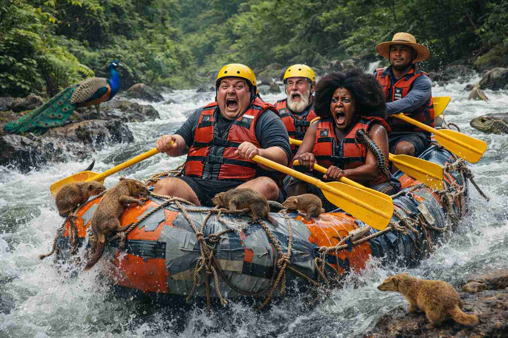
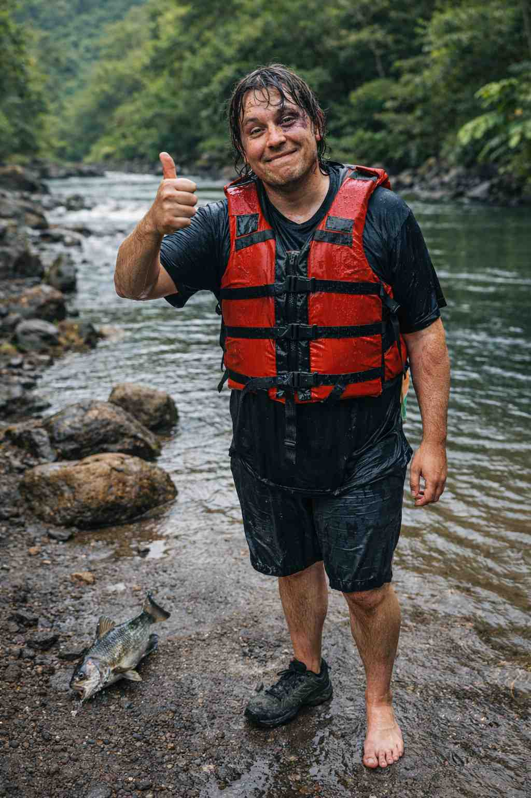
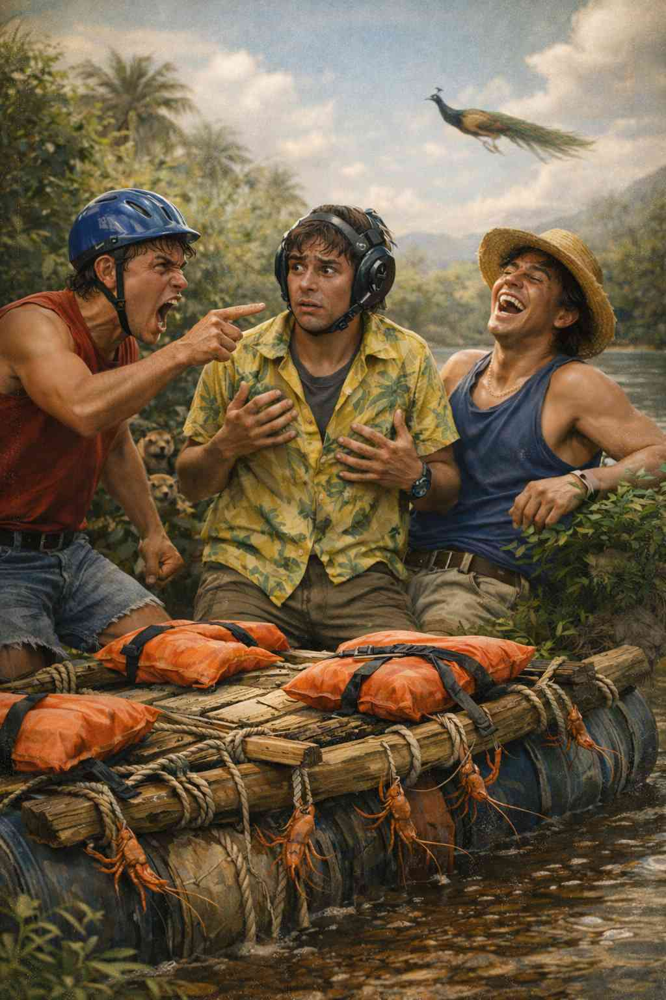

O'opu Whitewater Rafting

The O'opu mission: Our mission is to provide thrilling white water rafting adventures that challenge the body,
surprise the spirit, and
leave guests feeling accomplished, exhausted, and slightly confused about how things escalated so quickly.
While some guests leave with bumps, bruises, or missing footwear, we remain committed to ensuring every trip
is concluded with a thumbs-up, regardless of circumstance.
We are constantly evaluating our tours and asking the important questions, such as:
“Wow… how did that happen again?”
History
Oʻopu White Water Rafting was founded by a small group of individuals whose collective experience
with white
water
rafting could best be described as theoretical. What they did have was enthusiasm, a deep respect for Hawaiʻi’s
rivers, and a firm belief that “how hard could it really
be?” Our first tours were modest affairs. Equipment was limited, confidence was high, and lessons were learned
in real time.
Early guests were patient, adaptable, and remarkably forgiving. Some even returned, which we took as a very
encouraging
sign. Despite the occasional setback, unexpected swim, or missing

personal item, word spread. Guests began
sharing stories animated ones and Oʻopu White Water Rafting slowly earned a reputation for being an experience
you don’t
just
remember, but feel, even for days afterward.
Today, we continue to operate with the same sense of wonder that started it all. While we now have more
experience,
better equipment, and a slightly more formal approach to safety, we remain proudly committed to the spirit that
built
this company: showing up, doing our best, and being genuinely surprised when things get wild.